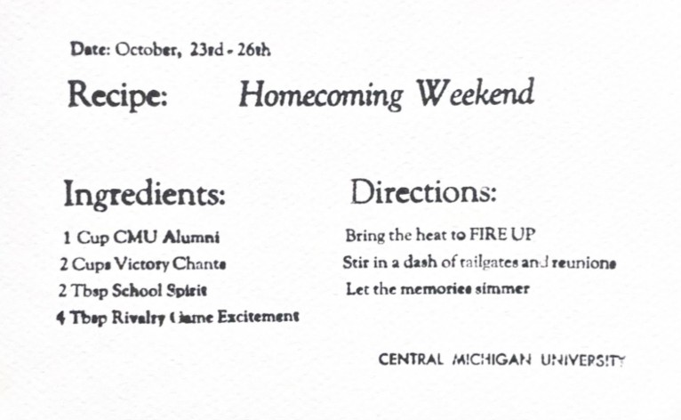

Letterpress
I'm not usually a fan of group projects for many reasons but I was honestly glad that we were put in groups for this one. I had never used the letterpress for anything before this assignment. We were taught how it works and how to make our own cards, but it was nice to have my partners, Ben and Keegan, who had both used the machine before.

The assignment was to create a creative homecoming invite card for the alumni to see. Homecoming would be just around the corner by the time the assignment was due. Once we landed on the idea of making the card resemble a recipe card, my group made some sketch ideas and then began to assembly the letters. It was very tedious work that made me frustrated when later realizuing one letter was out of place and we'd have to take it apart to fix the single mistake. In the end, I believed that the design came out quite nice and it was rewarding to be able to have several copies of the cards to show my family and friends afterwards.